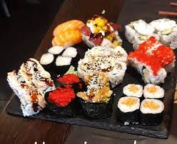
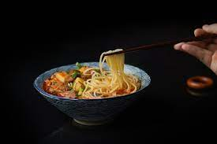
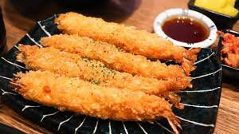
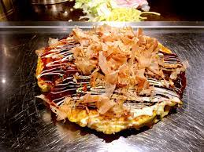
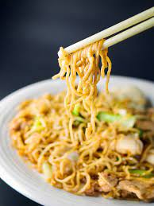

Recetas Japonesas
Sushi
El sushi es uno de los platos más reconocidos de Japón. Consiste en arroz aderezado con vinagre,
combinado con pescado fresco o mariscos, vegetales y otros ingredientes. Su origen se remonta al
siglo VII en el sureste de Asia y ha evolucionado a lo largo de los años, adquiriendo diferentes
estilos y presentaciones.
Para preparar sushi, se necesita habilidad y precisión en el corte del pescado, así como una
correcta proporción de arroz y aderezos. Hay varios tipos de sushi, como el nigiri (pescado sobre
arroz), maki (rollo envuelto en alga marina) y sashimi (pescado crudo sin arroz).

Ramen
El ramen es un plato de fideos japoneses servidos en un caldo aromático, acompañados de carne,
mariscos, verduras y otros ingredientes. Su origen se encuentra en China, pero se ha convertido en
un plato muy popular en Japón. Cada región de Japón tiene su propio estilo de ramen, con diferentes
tipos de caldo y toppings.
El ramen se sirve en tazones grandes y se consume caliente. Los fideos pueden ser finos o gruesos, y
el caldo puede ser a base de carne, pollo, cerdo o mariscos. Algunos de los ingredientes comunes en
el ramen incluyen los brotes de bambú, los huevos marinados, la carne de cerdo al estilo cha siu y
las algas nori.

Tempura
La tempura es un plato japonés que consiste en alimentos fritos recubiertos de una masa ligera y
crujiente. Los ingredientes más comunes para la tempura son los mariscos y las verduras, como los
camarones, calamares, pimientos y calabacines.
La tempura se sirve caliente y se acompaña con salsa de sumiso o sal. Los alimentos se sumergen en
una mezcla de harina, agua y huevo, y luego se fríen en aceite vegetal hasta obtener un dorado
ligero y crujiente. La tempura se disfruta como plato principal o como acompañamiento en diferentes
comidas japonesas.

Okonomiyaki
El okonomiyaki (お好み焼き) es una comida japonesa que consiste en una masa con varios ingredientes cocinados a la plancha. La palabra okonomiyaki está formada por el honorífico o (お), konomi (好み gusto) y yaki (焼き cocinado a la plancha), significando "cocinado (a la plancha) a su gusto" (en referencia al cliente, o puede ser también (alimento) huevo y repollo en juliana, junto con otros ingredientes dependiendo del tipo de referencia al cocinero).

Yakisoba
Literalmente "tallarines fritos", son originarios de China (allí se conoce con el nombre chow mein) pero hoy en día están integrados enteramente en la cocina japonesa, tal como ocurre con el ramen. Aunque el término soba forma parte de la palabra el yakisoba estos fideos no se elaboran con harina de trigo sarraceno, sino que son muy similares a los ramen que son producidos a partir de harina de trigo.
